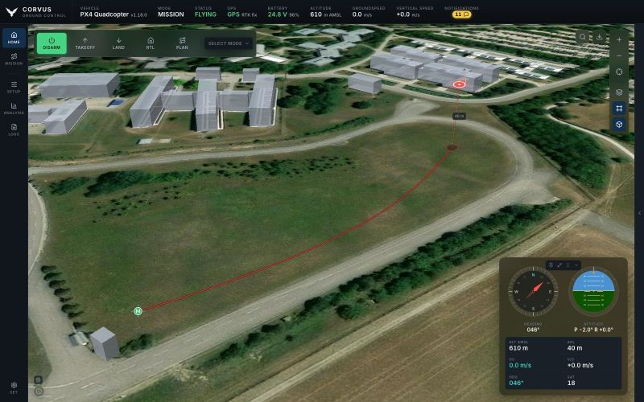

Fly
3D, terrain and offline maps
Corvus can show the ground with its real shape and the buildings standing on it, with the aircraft at the height it is actually flying. All of it, map imagery, elevation and buildings, can be stored in advance for a field with no internet.


Switching to 3D
The cube button on the map's control rail turns 3D on and off. 3D always shows the ground with its real shape wherever elevation data is available: hills are hills and valleys are valleys, drawn at true scale rather than exaggerated, with light shading so slopes read on any map style. What you are judging is clearance, and a hill drawn half again too tall is a hill you misjudge.
Rest the pointer on the cube button (or long-press it on a touch screen) and a small panel appears with two settings:
- Buildings
- On, buildings are extruded from OpenStreetMap footprints at their tagged heights, so the things actually in your way are in your way on screen too. Off, 3D shows the terrain alone and asks for no building data, which is the choice for a link you would rather keep for telemetry, or a laptop on battery.
- Elevation
- Which elevation model the terrain is drawn from; see below.
The panel only chooses; it never turns 3D on by itself, so you can set it before you press the button. The settings, and whether 3D was on, come back the next time you open Corvus.
The globe
Zoomed out, you get the Earth as a sphere with an atmosphere around its rim, which you can spin, mountains included. Zoom in and it hands over to the close view with nothing to press: from the whole planet down to the far end of the runway is one continuous movement.
Elevation models
| Model | What it is |
|---|---|
| Automatic | The default. Uses the map service's own model when it has one and its key is set (MapTiler, Mapbox), and Copernicus GLO-30 otherwise. The row says which one is in use right now. |
| Copernicus GLO-30 | The European 30 m model, noticeably sharper than SRTM on ridges and in narrow valleys, with national survey models (lidar, 1 to 10 m) where a country publishes one, for example Austria, Switzerland and parts of Germany. It is a surface model: forest and large buildings are part of the heights, which is what an aircraft has to clear. No key needed; served by the Mapterhorn project. |
| SRTM (AWS Terrain Tiles) | The older free model. |
| MapTiler Terrain, Mapbox Terrain | Appear once that service's key is set. |
Whatever you pick, a tile that cannot be had (offline, or with a key refused) is filled in from the free SRTM model, so choosing a better model never gives you a worse picture. Google publishes no elevation tiles.
The aircraft in the scene
The aircraft flies in the scene rather than sliding along the ground. It is drawn at the altitude it is really at, with a dashed line down to a shadow on the ground directly beneath it and its height above ground beside it, so "how high am I over that ridge" is something you can see instead of work out from two numbers.
Buildings
Buildings come from OpenStreetMap through the Overpass service, in blocks of about 1.5 km. Online, a block can take a few seconds to arrive and the map keeps asking until it has it, so buildings fill in over a moment rather than all at once. A building on the edge between two blocks is drawn once.
Where a building is missing although you are online, it is usually missing from OpenStreetMap itself. A building without a height tag is drawn two storeys high.
The photorealistic 3D buildings in Google Earth are a licensed product that needs a Google API key and a different renderer, and Google does not allow them to be stored for offline use. Corvus draws real footprints at real heights, not photographed models.
Offline maps
Corvus caches every map tile it fetches into a local store, so ground you
have already looked at keeps working with no connection. The store is an
MBTiles database in ~/.corvus/tiles unless the config file names
another folder (see where Corvus keeps its files).
Downloading an area
To prepare for a field trip, use Download offline map on the map and draw an area. The estimate shown before you commit includes everything that will be stored. Downloads are:
- Named, so "what do I have offline?" can be answered by name rather than by coordinates.
- Listed and drawn as outlines on the map. In the Mission planner they stay hidden until you ask for them, one box per area.
- Complete for 3D by default. The elevation (the free model plus the one 3D is using) rides along, from the whole world view down to the deepest zoom you download, and so do the area's buildings.
Buildings are fetched in the background after the tiles, nearest the centre first, so leave Corvus online for a few more minutes after a large download.
Terrain with no connection
3D keeps its relief in the field with no connection, also when you zoom in further than you downloaded: finer elevation is then worked out from the coarser tiles you have, and where coarse and fine ground meet it is joined into a slope instead of a step or a crack. Beyond the downloaded area the terrain is drawn from the coarse tiles without imagery, and there are no buildings. Everything else on the map keeps working.
Panning onto ground you do not have
After a few failed lookups Corvus stops trying the network for 30 seconds, so cached tiles keep rendering at full speed and the rest stays blank rather than freezing the map. Moving back into covered ground, or getting a connection back, recovers on its own.